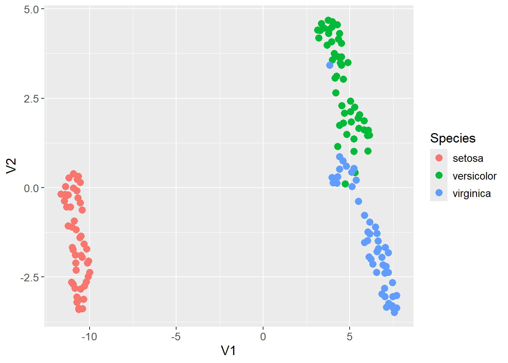
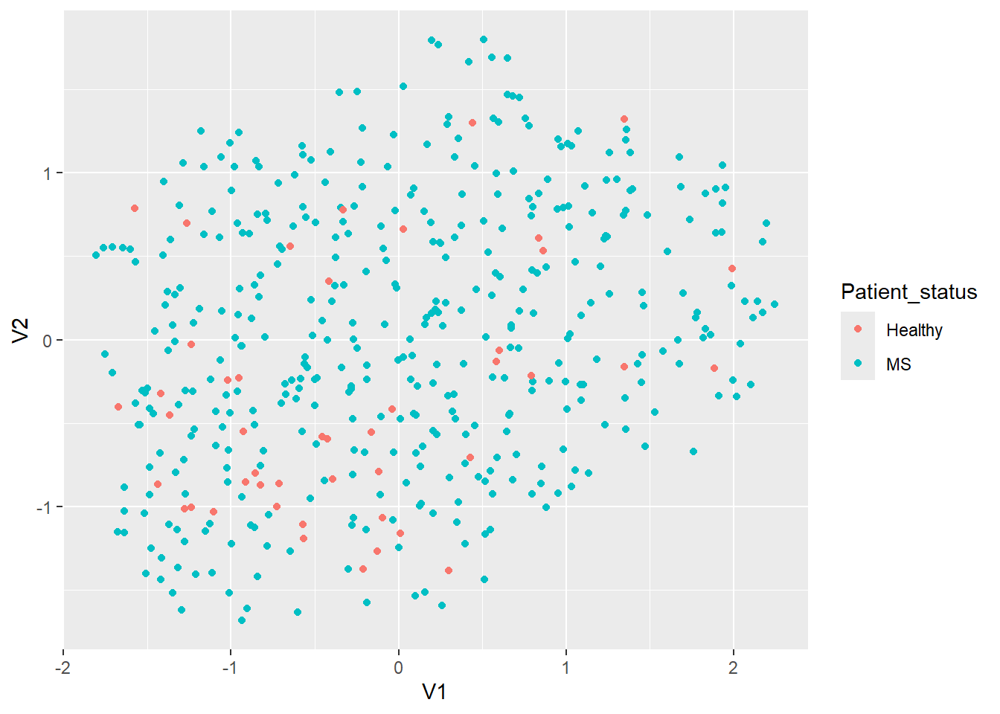

Show the code
set.seed(1337)
library("tidymodels")
tidymodels::tidymodels_prefer()
library("uwot")Set seed and load packages.
set.seed(1337)
library("tidymodels")
tidymodels::tidymodels_prefer()
library("uwot")Load data.
data("iris")
iris <- iris |>
tibble::as_tibble()
count_matrix_clr <- readr::read_rds("https://github.com/WilliamH-R/BioStatistics/raw/main/data/count_matrix/count_matrix_clr.rds") |>
select(-"NA")
meta <- read.csv(file = "data/metadata.txt") |>
as_tibble() |>
select(Run, chem_administration, ETHNICITY, geo_loc_name,
Host_age, host_body_mass_index, Host_disease, host_phenotype, host_sex) |>
rename(Sample = Run,
Treatment = chem_administration,
Ethnicity = ETHNICITY,
Location = geo_loc_name,
Age = Host_age,
BMI = host_body_mass_index,
Disease_severity = Host_disease,
EDSS = host_phenotype,
Sex = host_sex) |>
mutate(Patient_status = case_when(Disease_severity == "1HealthyControl" ~ "Healthy",
TRUE ~ "MS"),
EDSS = as.factor(EDSS),
EDSS = case_when(is.na(EDSS) & Disease_severity == "1HealthyControl" ~ "-1",
is.na(EDSS) & Disease_severity != "1HealthyControl" ~ "Unknown",
TRUE ~ EDSS),
EDSS = as.factor(EDSS))While Uniform Manifold Approximation and Projection (UMAP) can resolve some of the same issues as a PCA, e.g. dimensionality reduction, UMAP does so in a non-linear fashion unlike PCA. The model finds cluster in a high-dimensional space and project them onto a low dimension manifold trying to maintain the clustering.
Similarity scores are calculated between all points, and based on these are clustered in a k-nearest neighbor fashion. A low dimensional representation - usually 2 dimensional such that it can be visualized - is initialized and points are moved around taking the similarity scores into account. The process is repeated until the low dimensional representation is stable.
UMAP is especially popular for visualizing high-dimensional data. As an example, the iris data set is visualized below using UMAP. The input data contain all four variables of the iris data set, and the output is a two-dimensional representation of the data. The points are colored by the species of the iris, and as can be observed, the method found a decent clustering of the species.
iris_umap <- iris |>
uwot::umap(n_neighbors = 20,
min_dist = 0.2,
metric = "euclidean") |>
as.data.frame() |>
as_tibble() |>
bind_cols(iris |> select(Species))
iris_umap |>
ggplot(aes(x = V1,
y = V2,
col = Species)) +
geom_point()
The following section includes more details on how UMAP works. As mentioned, the first step is to find the distance between all observations in the high-dimensional space (first step in Figure fig-UMAP). The default distance metric is often Euclidean, but other metrics can be used.
For each observation, place it in the origin of a two-dimensional space and plot the remaining observations along the x-axis based on their distance to the observation in the origin. An exponential decay function is fitted such that the sum of y-values of the K nearest observations is equal to log2(K), and the y-value of all other observations is approximately zero (second step in Figure fig-UMAP). K is a hyperparameter which control the resolution of the clustering. A low value of K results in clusters capturing the details of the data as only the nearest few observations are considered. Opposite, a high value of K results in larger clusters that might lose some details, but better captures the overall structure of the data. The exponential function is on the form:
\[ S = \exp(-\frac{d_{A,B}-d_{NN}}{\sigma}) \]
Where \(d_{A,B}\) is the distance between observation A and B (the observation in the origin and the considered observation), \(d_{NN}\) is the distance to the nearest neighbor to the origin, and \(\sigma\) is a hyperparameter that is adjusted such that the sum of the y-values (\(S\)) of the K nearest observations are equal to \(\log_2(K)\). The value of \(\sigma\) is then likely to change for each repetition of placing a new observation in the origin. The score \(S\), which is also the y-value mentioned above, is then the similarity score between the two observations.
A similarity score then exists for each pair of observations. However, the similarity score from observation A to B is not necessarily the same as from B to A. This ambiguity occurs occurs if e.g. a observation C is actually closer to B, but on the opposite side of A on the x-axis. Then, from the perspective of A, B is the nearest observation, but from the perspective of B, C is the nearest observation. To make the similarity scores symmetric, the following formula is used:
\[ S_{sym} = (S_{A,B} + S_{B,A}) - S_{A,B}S_{B,A} \]
As mentioned, placing a point in the origin and calculating the similarity score by fitting the exponential is done for all observations. Afterwards, a symmetric similarity score exists for each pair of points in the data set.
A low dimensional representation of the data is initialized (third step in Figure fig-UMAP). Using the clusters from the K nearest neighbors, two observations are chosen at random in a random cluster. Two observations with high similarity scores are prioritized in the otherwise random selection. One of the two observations, also chosen at random, is to be moved towards the other. Before moving, an additional observation is chosen at random from a different cluster. The observation to be moved is to move closer to the other observation in the same cluster and further away from the additional observation, e.g. moving observation C towards observation B and away from observation E in Figure fig-UMAP. The distance to move the observation is determined by calculating a similarity score in the low dimensional manifold (represented by the red and greed curve in Figure fig-UMAP). The formula is:
\[ S_{low} = \frac{1}{1 + \alpha d_{low}^{2\beta}} \]
Where \(d_{low}\) is the distance between the two observations in the low dimensional space, and \(\alpha\) and \(\beta\) are hyperparameters that control the shape of the distribution. If the two observations are on top of each other, the distance is zero and the similarity score is one. The similarity score is calculated twice, once for the pair of observations in the same cluster, and once for the observation to be moved and the additional observation. This becomes an optimization problem where the observation is moved towards the maximum of the distribution for the other observation in the pair, and away from the maximum of the distribution for the additional observation. The cost function to be minimized is:
\[ C(S_{pair}, S_{add}) = \log\left(\frac{1}{S_{pair}}\right) + \log\left(\frac{1}{1 - S_{add}}\right) \]
Where \(S_{pair}\) is the similarity score for the pair of observations, and \(S_{add}\) is the similarity score for the observation to be moved and the additional observation. If moving the point in the wrong direction, or too far in the correct direction, the value of the cost function starts to increase again. The observation is moved in the direction of the negative derivative of the cost function one step at a time, a process called stochastic gradient descent. This process is repeated until the low dimensional representation is stable, and the final representation is the output of the UMAP algorithm (fourth step in Figure fig-UMAP).
The UMAP algorithm is applied to the count matrix with clr transformed values. The data is visualized in a two-dimensional space and colored by the patient status. No apparent clustering is observed.
count_matrix_umap <- count_matrix_clr |>
column_to_rownames(var = "Sample") |>
uwot::umap(n_neighbors = 4,
min_dist = 0.01,
n_components = 2,
metric = "euclidean") |>
as.data.frame() |>
rownames_to_column(var = "Sample") |>
left_join(meta,
by = "Sample")
count_matrix_umap |>
ggplot(aes(x = V1,
y = V2,
col = Patient_status)) +
geom_point()
sessioninfo::session_info()─ Session info ───────────────────────────────────────────────────────────────
setting value
version R version 4.3.3 (2024-02-29 ucrt)
os Windows 11 x64 (build 22631)
system x86_64, mingw32
ui RTerm
language (EN)
collate English_United Kingdom.utf8
ctype English_United Kingdom.utf8
tz Europe/Copenhagen
date 2024-05-25
pandoc 3.1.11 @ C:/Program Files/RStudio/resources/app/bin/quarto/bin/tools/ (via rmarkdown)
─ Packages ───────────────────────────────────────────────────────────────────
package * version date (UTC) lib source
backports 1.4.1 2021-12-13 [1] CRAN (R 4.3.1)
broom * 1.0.5 2023-06-09 [1] CRAN (R 4.3.3)
cachem 1.0.8 2023-05-01 [1] CRAN (R 4.3.3)
class 7.3-22 2023-05-03 [2] CRAN (R 4.3.3)
cli 3.6.2 2023-12-11 [1] CRAN (R 4.3.3)
codetools 0.2-19 2023-02-01 [2] CRAN (R 4.3.3)
colorspace 2.1-0 2023-01-23 [1] CRAN (R 4.3.3)
conflicted 1.2.0 2023-02-01 [1] CRAN (R 4.3.3)
data.table 1.15.4 2024-03-30 [1] CRAN (R 4.3.3)
dials * 1.2.1 2024-02-22 [1] CRAN (R 4.3.3)
DiceDesign 1.10 2023-12-07 [1] CRAN (R 4.3.3)
digest 0.6.35 2024-03-11 [1] CRAN (R 4.3.3)
dplyr * 1.1.4 2023-11-17 [1] CRAN (R 4.3.2)
evaluate 0.23 2023-11-01 [1] CRAN (R 4.3.3)
fansi 1.0.6 2023-12-08 [1] CRAN (R 4.3.3)
farver 2.1.1 2022-07-06 [1] CRAN (R 4.3.3)
fastmap 1.1.1 2023-02-24 [1] CRAN (R 4.3.3)
FNN 1.1.4 2024-01-12 [1] CRAN (R 4.3.3)
foreach 1.5.2 2022-02-02 [1] CRAN (R 4.3.3)
furrr 0.3.1 2022-08-15 [1] CRAN (R 4.3.3)
future 1.33.2 2024-03-26 [1] CRAN (R 4.3.3)
future.apply 1.11.2 2024-03-28 [1] CRAN (R 4.3.3)
generics 0.1.3 2022-07-05 [1] CRAN (R 4.3.3)
ggplot2 * 3.5.1 2024-04-23 [1] CRAN (R 4.3.3)
globals 0.16.3 2024-03-08 [1] CRAN (R 4.3.3)
glue 1.7.0 2024-01-09 [1] CRAN (R 4.3.3)
gower 1.0.1 2022-12-22 [1] CRAN (R 4.3.1)
GPfit 1.0-8 2019-02-08 [1] CRAN (R 4.3.3)
gtable 0.3.5 2024-04-22 [1] CRAN (R 4.3.3)
hardhat 1.3.1 2024-02-02 [1] CRAN (R 4.3.3)
hms 1.1.3 2023-03-21 [1] CRAN (R 4.3.3)
htmltools 0.5.8.1 2024-04-04 [1] CRAN (R 4.3.3)
htmlwidgets 1.6.4 2023-12-06 [1] CRAN (R 4.3.3)
infer * 1.0.7 2024-03-25 [1] CRAN (R 4.3.3)
ipred 0.9-14 2023-03-09 [1] CRAN (R 4.3.3)
irlba 2.3.5.1 2022-10-03 [1] CRAN (R 4.3.3)
iterators 1.0.14 2022-02-05 [1] CRAN (R 4.3.3)
jsonlite 1.8.8 2023-12-04 [1] CRAN (R 4.3.3)
knitr 1.46 2024-04-06 [1] CRAN (R 4.3.3)
labeling 0.4.3 2023-08-29 [1] CRAN (R 4.3.1)
lattice 0.22-5 2023-10-24 [2] CRAN (R 4.3.3)
lava 1.8.0 2024-03-05 [1] CRAN (R 4.3.3)
lhs 1.1.6 2022-12-17 [1] CRAN (R 4.3.3)
lifecycle 1.0.4 2023-11-07 [1] CRAN (R 4.3.3)
listenv 0.9.1 2024-01-29 [1] CRAN (R 4.3.3)
lubridate 1.9.3 2023-09-27 [1] CRAN (R 4.3.3)
magrittr 2.0.3 2022-03-30 [1] CRAN (R 4.3.3)
MASS 7.3-60.0.1 2024-01-13 [2] CRAN (R 4.3.3)
Matrix * 1.6-5 2024-01-11 [2] CRAN (R 4.3.3)
memoise 2.0.1 2021-11-26 [1] CRAN (R 4.3.3)
modeldata * 1.3.0 2024-01-21 [1] CRAN (R 4.3.3)
munsell 0.5.1 2024-04-01 [1] CRAN (R 4.3.3)
nnet 7.3-19 2023-05-03 [2] CRAN (R 4.3.3)
parallelly 1.37.1 2024-02-29 [1] CRAN (R 4.3.3)
parsnip * 1.2.1 2024-03-22 [1] CRAN (R 4.3.3)
pillar 1.9.0 2023-03-22 [1] CRAN (R 4.3.3)
pkgconfig 2.0.3 2019-09-22 [1] CRAN (R 4.3.3)
prodlim 2023.08.28 2023-08-28 [1] CRAN (R 4.3.3)
purrr * 1.0.2 2023-08-10 [1] CRAN (R 4.3.3)
R6 2.5.1 2021-08-19 [1] CRAN (R 4.3.3)
Rcpp 1.0.12 2024-01-09 [1] CRAN (R 4.3.3)
readr 2.1.5 2024-01-10 [1] CRAN (R 4.3.3)
recipes * 1.0.10 2024-02-18 [1] CRAN (R 4.3.3)
rlang 1.1.3 2024-01-10 [1] CRAN (R 4.3.3)
rmarkdown 2.26 2024-03-05 [1] CRAN (R 4.3.3)
rpart 4.1.23 2023-12-05 [2] CRAN (R 4.3.3)
rsample * 1.2.1 2024-03-25 [1] CRAN (R 4.3.3)
rstudioapi 0.16.0 2024-03-24 [1] CRAN (R 4.3.3)
scales * 1.3.0 2023-11-28 [1] CRAN (R 4.3.3)
sessioninfo 1.2.2 2021-12-06 [1] CRAN (R 4.3.3)
survival 3.5-8 2024-02-14 [2] CRAN (R 4.3.3)
tibble * 3.2.1 2023-03-20 [1] CRAN (R 4.3.3)
tidymodels * 1.2.0 2024-03-25 [1] CRAN (R 4.3.3)
tidyr * 1.3.1 2024-01-24 [1] CRAN (R 4.3.3)
tidyselect 1.2.1 2024-03-11 [1] CRAN (R 4.3.3)
timechange 0.3.0 2024-01-18 [1] CRAN (R 4.3.3)
timeDate 4032.109 2023-12-14 [1] CRAN (R 4.3.2)
tune * 1.2.1 2024-04-18 [1] CRAN (R 4.3.3)
tzdb 0.4.0 2023-05-12 [1] CRAN (R 4.3.3)
utf8 1.2.4 2023-10-22 [1] CRAN (R 4.3.3)
uwot * 0.2.2 2024-04-21 [1] CRAN (R 4.3.3)
vctrs 0.6.5 2023-12-01 [1] CRAN (R 4.3.3)
withr 3.0.0 2024-01-16 [1] CRAN (R 4.3.3)
workflows * 1.1.4 2024-02-19 [1] CRAN (R 4.3.3)
workflowsets * 1.1.0 2024-03-21 [1] CRAN (R 4.3.3)
xfun 0.43 2024-03-25 [1] CRAN (R 4.3.3)
yaml 2.3.8 2023-12-11 [1] CRAN (R 4.3.2)
yardstick * 1.3.1 2024-03-21 [1] CRAN (R 4.3.3)
[1] C:/Users/Willi/AppData/Local/R/win-library/4.3
[2] C:/Program Files/R/R-4.3.3/library
──────────────────────────────────────────────────────────────────────────────